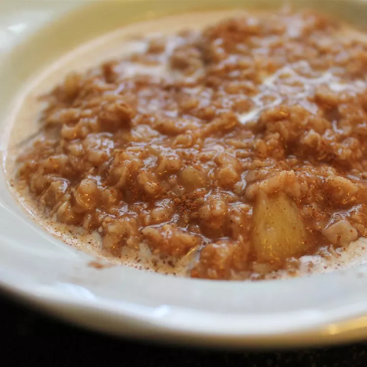

Apple Cinnamon Oatmeal

Finished Apple Cinnamon Oatmeal
Wonderful, simple recipe for an apple cinnamon oatmeal!
Ingredients
- 1 cup water
- 1/4 cup apple juice
- 1 apple, cored and chopped
- 2/3 cup rolled oats
- 1 teaspoon ground cinnamon
- 1 cup milk
Steps
- Combine the water, apple juice, and apples in a saucepan.
- Bring to a boil over high heat, and stir in the rolled oats and cinnamon.
- Return to a boil, then reduce heat to low, and simmer until thick, about 3 minutes.
- Spoon into serving bowls, and pour milk over the servings.